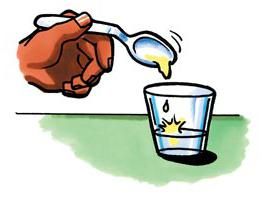
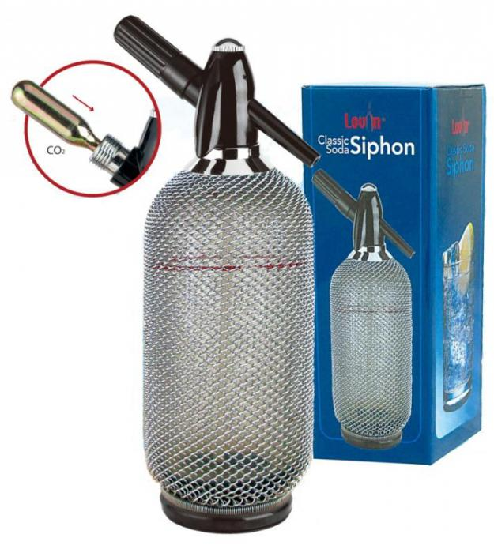
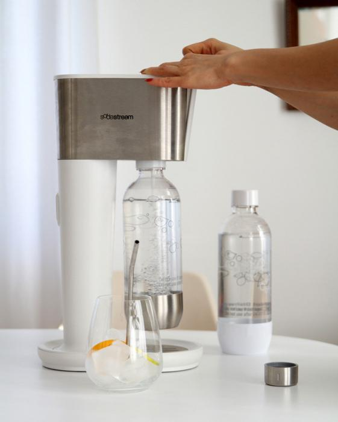
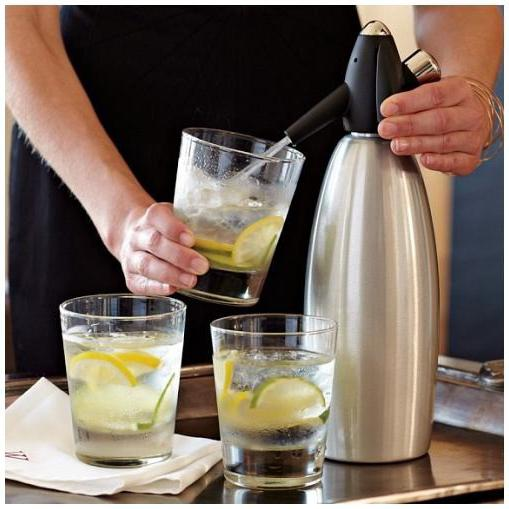
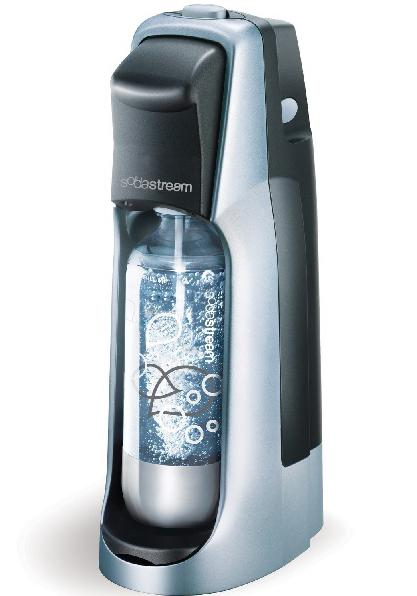
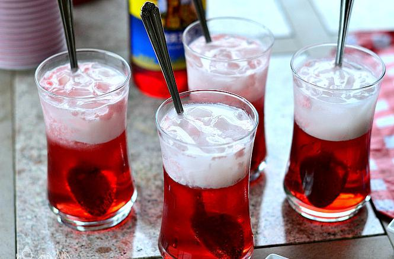
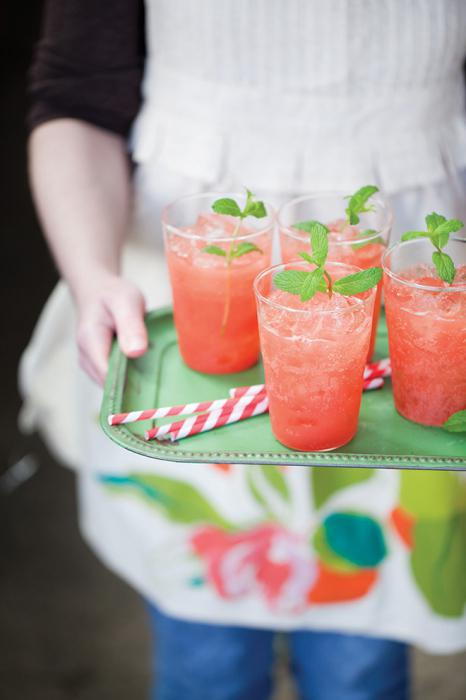
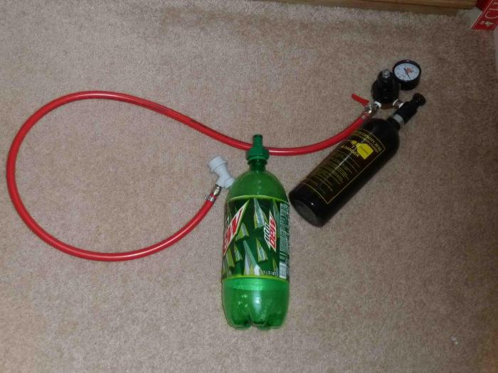

Mint tudod, az emberek régen elkezdték karbonizálni a vizet. Most már szokás, hogy ezt termelési szinten hajtják végre. De ahhoz, hogy megpróbálhassa saját kezűleg feldolgozni a vizet, gondosan meg kell értenie a folyamat minden bonyolult elemét.
Jó okok
Hippokrates a víz gázokkal járó előnyeiről is írt. Beszélt a test pozitív és akár terápiás hatásáról. Aztán senki sem próbálta meggázolni a vizet. Az emberek a természet ajándékait használták. Összegyűjtötték az életmentő nedvességet palackokban lévő buborékokkal és olyan helyekre vitték őket, ahol ilyen forrás nem volt. Minden rendben lenne, de az idő múlásával a víz kifogyott a gőztől, és rendkívül kellemetlen volt ezt a formát használni. Azóta sokan gondolkodtak azon, hogyan lehet a vizet újra szellőztetni, hogy a természetes folyamatok ne befolyásolják ezt a tényezőt. A tudósok azt találták, hogy a folyadékok szellőztetésére kétféle módszer létezik: mechanikai és kémiai. Az első a folyékony frakció (közönséges gyümölcs, ásványvíz vagy bor) szén-dioxiddal történő közvetlen telítettsége. És a második azzal jár, hogy ugyanazok a buborékok jelennek meg kémiai reakciók eredményeként: erjesztés (sör, kvasz, almabor és pezsgő) vagy semlegesítés (szódavíz). Mindegyikük kissé érdekes és megtalálta a helyét az emberi életben.
Nem ellenőrizhető buborékok
Joseph Priestley, az angol vegyész először megtanulta a víz karbonizálását. 1767-ben megfigyelte ezt a jelenséget a sör tartályokban történő erjedése során. Kicsit később a Bergman svéd feltalálta a „telítőt”, amely egy szivattyú segítségével telített szén-dioxidot tartalmazott vízzel. Az emberiséget azonban kísértetjárta a "buborékos víz" ipari előállítása. Korábbi tapasztalatainak felhasználásával 1783-ban Jakob Schwepp egy speciális berendezést tervezett, és ő volt az első, aki az új gyártmányt ipari sínekre helyezte. Kicsit később kezdte a szódabikarbóna kiindulási összetevőjét, és a jövőbeli népszerű ital elődese lett. Idővel egész társaságot alapított és regisztrálta a Schweppes márkát. Az emberek gyakran felteszik a kérdést: "Miért kell ilyen módon kezelni a vizet?" Több oka van:
1) A karbonizáció semlegesíti a kellemetlen szagokat és javítja a normál víz ízét. Ismert, hogy például az ásványvíz rossz szaga van, ha meleg és buborékok nélkül inni.
2) Meleg időben az így kezelt víz jobban elfojtja a szomjat.
3) A szén-dioxid, amely telíti a folyadékot, kiváló tartósítószer és lehetővé teszi az italok hosszú ideig tartását.
Mindez nemcsak a hétköznapi emberek, hanem a nagyvállalatok tulajdonosai még nagyobb érdeklődésének problémáját okozza.
Opció kezdőknek

Néha annyira szomjas vagy, de nincs vágy a boltba menni. A kérdés az, mit kell tenni ebben az esetben. Hogyan készítsünk pezsgővizet otthonról való távozás nélkül? A legegyszerűbb út még gyermekek számára is megfelelő. Ez elég sokáig tart:
- üres tartály (üres üveg vagy sima üveg),
- szódabikarbóna
- cukor,
- citromsav
- rendes víz.
Ital elkészítéséhez:
- Vegyünk egy kis szódat, öntsünk rá egy citromot (vagy nyomja meg néhány csepp egy szelet citrommal) és várjunk egy kicsit. Ennek eredményeként megtörténik a ürítés folyamata.
- Most össze kell kevernie az összes komponenst. Ehhez öntsünk vizet egy pohárba, adjunk hozzá egy kanál granulált cukrot és gyorsan keverjük össze. Ezután adjunk hozzá ½ teáskanál citromot és az előtte készített levert sütő szódat. Csak jó keverés marad.
Ez a legegyszerűbb lehetőség, emlékezve arra, hogy mindenki megértheti, hogyan készíthet pezsgővizet. A szovjet időkben ezt a módszert gyakran alkalmazták.
Biztonsági óvintézkedések
Az embereket mindig érdekli a részletek. Mielőtt kitalálná a víz szénsavasságát, önnek el kell döntenie, hogy használ-e ilyen italokat. Végül is az ilyen folyadékok nem mindenkinek hasznosak. Vannak olyan kategóriák, akiknek teljesen ellenjavallták őket. Ez a következő:
1) Három év alatti kisgyermekek, akiknek emésztőrendszere még nincs hozzászokva az ilyen befolyásokhoz.
2) Az emésztőrendszer különböző rendellenességeitől szenvedő emberek. Ide tartoznak azok is, akiknek orvosai fekélyt, gyomorhurutot, hepatitist, pankreatitist és más betegségeket találtak. Amikor széndioxidot kapnak, éles irritációt okoznak a nyálkahártyán és súlyosbítják a már meglévő gyulladásos folyamatokat.
3) Allergiás vagy túlsúlyos személy. Ennek az embercsoportnak a "veszélyes" folyadékok ivásától is tartózkodnia kell.
Mindenki másnak gondosan mérlegelnie kell, mielőtt pillantást vetne a kiskereskedelmi üzletek fényes címkéire vagy a technológiai folyamatok megértésére.
Ismerős eszközök

Ahhoz, hogy kellemes üdítőt kapjon, nem kell menni a boltba, és sorban állni. E célból régóta találtak egy speciális készüléket. Ez egy vízszifon. Lehet kicsi, otthoni és nagy, amelyet gyakran használnak bárokban és kávézókban. A Szovjetunióban az utcákon mindenütt láthattak gépeket, amelyek egy gomb lenyomása után egy üveglapot töltöttek az életadó nedvességárammal. Az ilyen eszközök már feledésbe merültek. Csak a háztartási használatra szánt modellek maradnak meg. Ezek nagyon egyszerűen vannak elrendezve. A szifon egy emelőből és egy szén-dioxid-palackból áll. Az eszköz a fizika és a kémia törvényein alapszik. A fő edényt háromnegyedszer megtöltik víz. Egy henger van rá rögzítve, amely a maradék helyet a bemeneti szelepen keresztül szén-dioxiddal tölti ki. És a kar megnyomása után a nyomás alatt lévő folyadék kijön. Ennek eredményeként a pohárban szokásos szénsavas víz jelenik meg. Speciális szirupok és ízesítők segítségével megadhatja a kívánt ízét, vagy elkészítheti kedvenc koktélját.
Minden ízlés szerint

Mindenki választhatja meg a víz számára a szifont, amely a legjobban szereti. Sok év telt el az első eszközök létrehozása óta. Ez idő alatt a szakemberek különféle módosításokat igénylő eszközöket fejlesztettek ki. Leghíresebb közülük:
1) Az osztrák "Isi" és az olasz "Paderno" szifonjai. Hasonlóak azokhoz, amelyeket 40-50 évvel ezelőtt gyártottak. Az egyetlen különbség az, hogy a ház rozsdamentes acélból készül, nem pedig rendes üvegből. Hosszú ideig fenntartják a vízhőmérsékletet, és meglehetősen olcsók. De ezekben a szifonokban jelentős hátrány van - veszély. A tartályt kézzel kell behelyezni, amely helytelen használat esetén súlyos sérüléseket okozhat.
2) "SodaTronic" típusú eszköz. Nincs víz benne. Ezt az eszközt a kész italok szénsavmentesítésére tervezték. A szerkezet belsejében egy eltávolítható gázt tartalmazó tartály található, amely lehetővé teszi a termék szén-dioxiddal való telítettségének beállítását.
3) SodaStream eszközök. Ezekben vizet öntenek egy speciális palackba, amelyet már tartalmaz a készlet.
Az eszköz megválasztása minden esetben a vevő kívánságától függ.
A szovjet időkben konyhánkban nem volt kávéfőző, mikrohullámú sütő vagy elektromos vízforraló. A tisztelet helyén volt egy újabb „egység”, amely szinte minden családban elérhető volt - szifon a szódavízhez. És nem hiába vette át helyét. Mindegyik városban több „benzinkút” volt számukra. Hazahozta, szirupot vagy közönséges lekvárt töltött egy pohárba, szóda hozzáadásával a szifonhoz, és mágikus italt kapt. Sokan érdekelnek abban, hogyan lehet otthon otthon elkészíteni a szódat.
Amire most szüksége van, hogy pezsgő vizet kapjon
Jelenleg, ha szükséges, a gázzal víz gond nélkül elkészíthető, mint a múltban. Most a speciális üzletekben, szupermarketekben megjelent a legkülönbözőbb szifonok sora.
Különböző formájú és színű, és mindig kiválaszthatja a kívántat. A permetező kannák beszerzésével nem lesznek problémák. Ugyanazon üzletekben értékesítik. Készítsen egy listát azokról, amelyekre szükségünk van az otthoni víz gázellátásához: szifon, kannák gázokat egy szifonhoz, víz, szirup - arra az esetre, ha édes italt akarunk inni. Egy időben, átmenetileg, néhány ember megpróbálta léggömböket használni a légpuskákból. Mivel pedig műszaki gázzal töltötték meg, és nem tiszták, nem voltak nagyon alkalmasak. Tehát úgy döntöttünk, hogy mit kell vásárolnunk.
Szifont vásárolunk szódahoz
Vásárlásakor figyelembe kell vennie néhány árnyalatokat, tekintettel a széles választékra:

- A gáztelítettség kívánt beállítása. Ebben az esetben szükség esetén enyhén szénsavas és erősen szénsavas ital is előállítható.
- Gázzal való telítettségnél jelnek kell lennie. Ez a szolgáltatás mindig segít abban, hogy a víz megfelelő szénsavasságú legyen. Kellemes csengő szólalt meg - megszakították a gázellátást és ennyi.
- Megvásárolhat egy szifont a szódahoz, előre meghatározott szintű automatikus szénsavval. Ez lesz a tökéletes megoldás.
Információ: a jelenlegi szifonok teljesen biztonságosak. A benne levő víztartályok környezetkímélőek, a széndioxidot csak erősen tisztított palackokban használják. A gázpalackot biztonságosan távolítják el, mivel a szifon automatikusan csökkenti a nyomást, amikor kikapcsolják. A szifonok legújabb modelljei multifunkcionális eszközök, nemcsak egy tartály és egy csapteleppel ellátott palack, amelyek egyébként kicserélhetők egy újra, és speciális pontokon tölthetők fel, amelyek száma folyamatosan növekszik.
A házi szóda előnyei
Már kitaláltuk, hogyan készíthetünk szódat otthon. És miért van rá szüksége? Valójában az üzletekben bármilyen vizet meg lehet vásárolni, minden ízléshez. Milyen előnyei vannak?

- Az alacsonyabb árért több italt kapunk, vagyis pénzt takaríthatunk meg.
- Nem használunk konzervdobokat vagy műanyag palackokat, vagyis nem szemeteljük a környezetet.
- Óriási választékot kínálunk a víz számára: természetes, diéta, energia, gyümölcs, tonik, jeges tea és még sok más.
- Nem szükséges nehéz palackokat szállítani a boltból.
- A szifonok áram és elem nélkül működnek, könnyen kezelhetők.
- Helyezzen el minimális helyet a konyhában.
- Nemcsak minden ízlésnek, hanem a gázok telítettségének különféle fokát is elkészítheti.
- A főzés minden családtag számára kényelmes és élvezetes, beleértve a gyermekeket is.
Ezen okok miatt és számos más személy számára a házi készítésű szóda egyre népszerűbbé válik.
Szódák előállítása háztartási termékekből, berendezés használata nélkül
Bármely háziasszony konyhájában mindig vannak olyan alapanyagok, amelyekkel elkészítheti kedvenc italunkat. Először ne feledje, hogy milyen szén-dioxid szabadul fel. Ez akkor fordul elő, ha citromlé vagy ecet csepegtetik a szódabikarbóna. Van egy ötletünk arra, hogyan készíthetünk szódat otthon. Két konkrét példát adunk Önnek.

Az első. Készítjük a Baikál italt - a válaszunk a Coca-Cola. Három liter ital elkészítéséhez: orbáncfű, édesgyökér, eleutherococcus, fenyőtű - egyenként csak 10 gramm, egy pohár cukor és fél citrom. Tűket és gyógynövényeket töltünk három órán keresztül forró vízzel. Ezután kiszűrjük a folyadékot, forraljuk, adjuk hozzá a cukrot, lehűtjük, adjuk hozzá a fél citrom levét, szódaval keverten. Kész!
Második példa. Az ebben a módszerben szereplő összes katalizátort közvetlenül összekeverik egy pohárban. A lédús körtegyümölcsből frissen készítjük, ízlés szerint oldjuk fel a cukrot. A keverékbe nyomja ki a citrom egyharmadának levét. Öntsön egy kis szódát egy külön pohárba, és öntsen bele levet. Készen áll a hercegnő!
Édes szóda készítése
Tudva, hogy otthon miként készíthető szóda, kipróbálhatja saját magának főzni és szirupot készíteni, hogy teljesen természetes, házi készítésű terméket kapjon. Az első lehetőség a „Tarragon”. Szüksége van rá: egy csomó közepes méretű tárkony, egy pohár víz és granulált cukor - 2/3 csésze.

Mossuk meg a tárkonyot és daraboljuk több részre. Forralunk vizet, helyezzük bele a fűünket és főzzük kb. 20 percig alacsony lángon. Hűtsük le, szűrjük le, oldjuk fel a cukrot a levesben, és tegyük újra tűzre. Keverés közben várva megvastagodhat és adjunk hozzá citromlevet. A szirup kész, szénsavas vízzel ízlés szerint hígítható. Ha más ízű édes szódat szeretne kapni, vegye fontolóra egy másik szirupreceptet - frissítő limonádét. Összetevők: cukor - egy pohár, a karamellízesítéshez barna, víz - egy pohár, citrom - 5-6 darab, fahéj - fél teáskanál. Keverje össze a vizet a cukorral, és forralja fel a szirupot, lehűtse. Citromlé, kb. Egy pohár lesz, öntsük szirupba, keverjük össze újra, és adjunk hozzá fahéjat. Hűtsük le - és a szirup készen áll, szódaval hígítható.
Szénsavas víz esetén ajánlott nyomásálló palackok használata, amelyeket kifejezetten a szifonok gyártói készítettek. Legalább három év eltarthatósági idejük van, lezárt fedéllel, különféle alakú lehet. Javasoljuk, hogy könnyű alumíniumból készült gázpalackokat vásároljon. Egy henger gyakran elegendő legalább 60 liter pezsgő készítéséhez. Kívánság: vásárold mindkét terméket csomagban. És az a feladat, hogy otthon előállítsuk a szódat, könnyű feladat lesz, amelyet az első osztályos is megbirkózni fog.
Nem olyan bonyolult. Számos receptre felvehető keverék létezik, de ezek közül a legfontosabb a szén-dioxid, amely az égés során nem alkalmazható, nincs szaga és színe, ugyanakkor az oxigénnél is nehezebb, gyorsan feloldódik a folyadékban, az utóbbi enyhe savasságot biztosítva. Pontosan így nézett ki a szódás előállítás folyamata a szovjet korszakban: a szén-dioxidot nyomás alatt egy hengerből édesített vízzel tározóba juttattuk, és teljes mértékben feloldottuk folyadékban.
Az otthoni vízhez speciális szén-dioxid-palackokat és egy szifont használhat, amely lehetővé teszi a gáz adagolását a vízbe (hardverboltokban kapható).
Nincs mód szifon és hengerek megvásárlására? Rendben, szén-dioxidot előállíthat olyan improvizált háztartási termékekből, mint a szódabikarbóna és az ecet. E két összetevő keverése során kémiai reakció zajlik, amelynek következménye a szén-dioxid felszabadulása. Keverje össze a termékeket a következő arányokban: liter vízben vegyen be hét evőkanál 9% -os ecetet és evőkanál két teáskanálnyi mennyiségét. Szüksége lesz továbbá a következő készletre: egy méteres PVC cső, két üveg (válasszon sötétebbet) és két, előre lyukasztott kupak, amelyek átmérője valamivel kisebb, mint a cső átmérője.
Szénsavas folyamat
Az első palackot meg kell tölteni vízzel, a másodikhoz öntsünk szódat és öntsünk ecetet. Fontos megjegyezni, hogy a kémiai reakciót időben el kell halasztani, ezért először tekerje be a szénsavas papírtörülközőt, és öntsön ecetet a felületére - így lesz ideje szorosan rögzíteni a palack kupakját, mielőtt a széndioxidkibocsátás megkezdődik, és elkerülheti annak jelentős részének elvesztését. kötet. A gázszivárgás elkerülése érdekében ne felejtse el szorosan rögzíteni a csövet a fedél lyukain folyékony műanyaggal vagy ragasztóval.
A papírtörlőt kicserélheti egy ragasztható fóliából vagy fóliából készült borítékra. Csináljon előre lyukakat a felületén a kémiai reakció megkönnyítése érdekében.
A víz és a szén-dioxid keverési folyamatának során a szódatartályt 5 percig megfelelően rázni kell a lehető legjobb gázmennyiség legjobb minőségű elosztása érdekében. A végén alacsony széntartalmú italt kap, amelynek íze szirupok, gyümölcsök vagy gyümölcs- és bogyós gyümölcslevek segítségével változtatható.
Bárki, aki megtalálja a Szovjetunió idejét, valószínűleg emlékezni fog az automata gépekre, amelyek közül a szokásos fillért inni lehetett szirupmal. Az nosztalgiával rendelkező idősebb generáció képviselői a kúp alakú edények mögött álló, csapteleppel mosolygó értékesítő nőket emlékeztetnek: 4 kapecks szóda normál szirupral, 8 kazetta - dupla. Sajnos, az élelmiszeripar sajnos annyira összeolvadt a vegyiparral, hogy ijesztő még azt gondolni, hogy milyen periódusos táblázatot használunk „Citro” vagy „Coca-Cola” néven. De italokat készíthet, amelyek ízét gyermekkori emlékeinkre említjük, és saját kezűleg. Hogyan készítsünk szódat otthon?
A kezdők számára egy kicsit az elmélet. Bármely szóda - egyszerű, édes, különféle ízekkel - két fő összetevőt tartalmaz. Ez víz és szén-dioxid. A kémia nyelvében ez a széndioxid oldatának tartalma a H 2 O-ban. Minden más: a szirupok, gyógynövény főzetek, karamellizált cukor csupán ízek. Tegyük fel, hogy minden otthon tiszta víz van. És honnan lehet ezt megszerezni És ami a legfontosabb, hogyan oldható fel vízben? Egyszóval: hogyan lehet házi készíteni otthon? A legegyszerűbb módszer a szifon használata. Ez egy ilyen dobozos tartály, amikor a fogantyút megnyomják, nyomás alatt szivattyúzzák a normál vízbe, így egy pohárban buborékos ital alakul ki. Öntsön gyümölcslét, gyümölcslevet, kompótot vagy gyógynövények főzetét a szifonba. Röviden: ez szükséges dolog a mindennapi életben. De most nehéz szifont kapni, és nagyon sok ilyen tartály van. Hogyan készíthetünk szódat otthon nélküle, lehetséges?

Igen, külön költség nélkül. Ha szereti főzni, akkor valószínűleg megtalálja a konyhában minden hozzávalót. Emlékszel, mit csinálnak, hogy a tésztát levegőssé tegyék? Így van: egy kicsit adnak hozzá. A 6. osztályú kémiai tankönyv a legegyszerűbb szabályt adja: lúg semlegesíti a savat, és ezen egyszerű kémiai reakció eredményeként széndioxid szabadul fel. Ha ecetet vagy citromlevet (savat) tetünk fel (lúg), akkor a várt reakció megtörténik: a keverék habosodni kezd, buborékokat bocsát ki. A leg intelligensebbek már kitalálták, hogyan lehet otthon készíteni szódát. De még mindig elmagyarázom: öntsünk egy pohárba egy kanál szóda és fél kanál citromsav, öntsünk hideg forralt vizet. Minden - a habos ital kész.
Miután megtanulta a házi szóda elkészítését, megtanulhatja, hogyan készíthetnek italokat annak alapján. Itt például a "Baikal" - "a válaszunk Chamberlainre", vagy inkább a 1967-ben kitalált Coca-Cola. 3 liter italhoz 10 g orbáncfű, Eleutherococcus, édesgyökér, fenyő tű, fél citrom és egy pohár cukor szükséges. Öntsön forró vízzel gyógynövényeket és tűket, hagyja főzni 3 órán át. Szűrjük a folyadékot, forraljuk újra, öntsünk cukrot, hűtsük le, nyomja ki a citromléét, keverjük hozzá szóda.
Van egy másik módszer a szóda elkészítésére otthon. A kémiai reakciókatalizátorokat közvetlenül össze kell keverni egy pohárban. Készítsen körtelevet egy lédús gyümölcsből, oldja fel benne a cukrot ízlés szerint. A citrom egyharmadából nyomja le a keveréket. Öntsön egy kis szódat az üvegbe és öntse a levet. Kész a híres Duchesse ital.
Hogyan készítsünk szénsavas vizet a megszokottól?
Számos teljesen bonyolult módszer létezik. Tehát egy ital elkészítéséhez ásványvizet kell bevenni, majd hozzákeverni szóda és citromsavval.
Szükséges lesz:
- egy teáskanál szóda;
- a citrom egy része, úgy, hogy 2 teáskanálnyi citromlé jön ki, vagy egyszerű citromsav - fél kanál;
- öntsön szódat egy pohárba, és oltsa ki citromlével;
- azok, akik szeretik az ízeket vagy csak szóda vizet szeretnének édesíteni, nád- vagy sima cukrot adhatnak hozzá. Ha karamellizált cukrot ad hozzá, akkor megkóstolhatja a kólát. És ha öntsön egy kis öntettel - az nem rosszabb, mint a bolt bármely más édesvize. Ha egy szelet citromot közvetlenül a folyadékba tesz, limonádét kap.
Otthoni készítménnyel más módon is könnyű előállítani.
1. módszer
Ez a recept jó nagy mennyiségű pezsgő készítéséhez.
Először keverjen össze mindent a por számára:

- szódabikarbóna - három hiányos teáskanál elegendő;
- öt teáskanál porcukor, ízléses preferenciáitól függően esetleg egy kicsit több vagy valamivel kevesebb;
- citromsav - 6 kanál (teáskanál);
- öntsük az összes összetevőt, a porcukor kivételével, a tartályba, keverjük össze és összetörjük. A keveréket szinte porértékig kell őrölni;
- öntsünk porcukorral;
- keverjük össze a teljes keveréket.
Miután a keverék elkészült, öntsük a folyadékba.
Az otthon készített ital nem kevésbé érdekes íze lesz akkor, ha a porkeveréket gyümölcslével vagy gyümölcslével önti. Valószínűleg mindenki emlékszik a boltban lévő hatalmas édes szódamennyiségre - most nagyszerű lehetősége van önnek főzni ezt megfelelő mennyiségben!
2. módszer
Ez a módszer azok számára készült, akik szeretnék megtanulni, hogyan lehet egy liter pezsgőt elkészíteni, ecetet adva a készítményhez.
Szüksége lesz:
- 2 nagy üveg, amely fedéllel lezárható és csövekkel összekapcsolható;
- asztali ecet - 100 ml;
- egy liter rendes víz (még többet is hozzáadhat, de ekkor növelheti a fennmaradó arányokat);
- két kis kanál szóda
Amikor az összes összetevő elkészült, öntsön folyadékot az első tartályba, és engedje bele a csövet. Szorosan zárja le a fedelet. Öntsünk szódat és ecetet a második üvegbe. Lezárjuk, valamint az első palackot.

Telepítsük a csövet a szén-dioxid átmenetére. 5-7 percig rázza fel a folyadékot a palackokban.
Így otthon szén-dioxid szabadul fel, és telíti a folyadékot, így karbonizálódik. Az elkészítés után tanácsos lehűteni az italt. Ne felejtse el, hogy egy ilyen ital hideg részeg esetén a legjobb a szomjúság érdekében.
3. módszer
A szénsavas ital otthon való elkészítésének érdekes módszere a kész szén-dioxid felhasználása.
Ehhez szüksége lesz:
- elkészített szén-dioxid;
- ásványvíz;
- szifon.
- a szifon tartályt folyadékkal (lehetőleg hűtve - a szén-dioxid hatékony telítettségéhez) töltsék fel és szorosan lezárják;
- szén-dioxid henger csatlakozik a töltéshez;
- a szelepet csavarjuk ki. Amikor az összes szén-dioxid már belépett a szifonba, csavarja le a hengert és zárja le;
- a szóda kész!
4. módszer
Otthon erjesztéssel is készíthet szénsavas italt.
Ehhez hajtsa végre a következőket:
- Készítsünk;
- körülbelül 4 liter hűtött és egy pohár meleg víz;
- fél pohár cukor;
- egy evőkanál élesztőt. Ugyanebben az esetben, ha nincs kéznél kenyér élesztő, használhat sört, de alacsonyabb adaggal - egy teáskanál hegyén;
- ízlés szerint öntsünk egy teáskanál természetes aromaanyagot.
Koncentrált folyadék lehet: gyümölcsitalok, limonádé stb., Vagy gyógynövények: tárkony vagy menta.
- Adja hozzá és oldja fel az élesztőt meleg vízben. A teljes feloldódáshoz hagyja őket 5-10 percig főzni;
- Egy edényben keverje össze a már feloldott élesztőt cukorral és ízével. Öntsön fokozatosan egy hideg folyadékot, és keverje addig, amíg a cukor és más összetevők fel nem oldódnak;
- Öntsük a kapott italt az üvegekbe és zárjuk le;
- Tartsa sötét helyen 5 napig. Ebben az időben a folyadék vándorol, tehát rendszeresen csavarja le a fedeleket, és csavarja be őket újra;
- 5 nap elteltével vigye az üvegeket a hűtőszekrénybe;
- Enni kész!
Azok számára, akik kísérletezni szeretnének, és boltszerű ízét szeretnék megszerezni, javasoljuk, hogy adjunk hozzá limonádét, gyõrt, gyümölcsitalot vagy bármilyen gyümölcslevet. Ön elérheti a hatást és az aromákat.
De nem mindenki iszhat szénsavas folyadékot. Ezért ésszerű kitalálni, hogyan lehet csendes vizet szénsavas vízből előállítani?
Két fő módszer áll rendelkezésre a csendes víz előállítására:
- rázza fel és hagyja nyitva meleg helyen;
- az oxigénáramot (tiszta nitrogént) engedve a folyadékon keresztül - "fúj" szén-dioxidot.
Abszolút nem nehéz mindkét manipulációt elvégezni. A szén-dioxiddal telített víz természetes és mesterséges. Tegyük fel azonnal, hogy a természetesen telített jelenség nagyon ritka.
De mindannyian tudjuk, milyen finom! Tehát próbálja ki a fenti módszereket, és válassza ki a kedvencét!